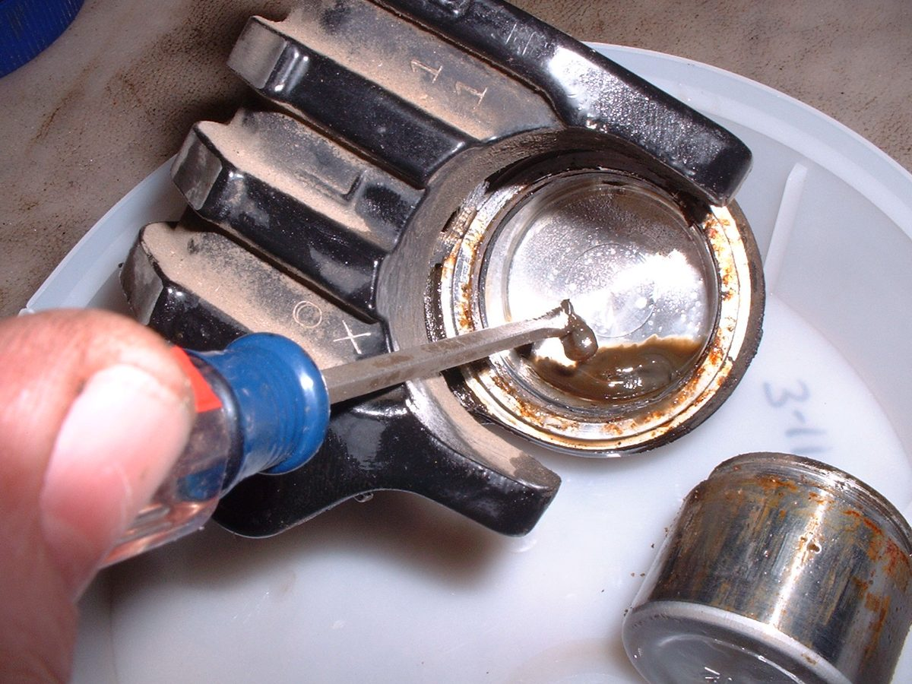

The fluid in the reservoir window looks brown or black, or the level is near or below the LOWER mark. Brake fluid absorbs water from the air over time and darkens as it ages; wet fluid boils at a lower temperature and corrodes the inside of the brake. A low level is usually caused by pad wear, but it can also mean a leak.
Is it safe to ride?
Ride with care if the level is above LOWER, the lever is firm, and there is no leak. If the level is below LOWER, the lever is soft, or you see a leak, do not ride.
Quick checks first
- Stand the bike upright and level the reservoir before reading.
- Check pad thickness: worn pads lower the fluid level.
- Look for wet fittings.
- Find out when the fluid was last changed.
Diagnose it step by step
1Is the level below LOWER?
- Yes: go to step 2.
- No: go to step 4.
2Are the pads worn near the limit (K-Light 125: 3 mm)?
- Yes: this explains the low level. Fit new pads with Replace disc brake pads; the level rises when the pistons are pushed back. Do not overfill before fitting new pads.
- No: go to step 3.
3Is there a leak anywhere (hose, banjo, caliper, lever)?
- Yes: go to Brake fluid is leaking.
- No: top up with the same fluid type (from the cap). Check again after a week. If it falls again, look harder for a leak.
4Is the fluid dark brown or cloudy?
- Yes: replace it all with Replace brake fluid and bleed the brakes. On CBS or ABS bikes use the workshop routine.
- No: go to step 5.
5Are there black specks or sludge in the reservoir?
- Yes: rubber seals are breaking up, often from the wrong fluid or from oil or petrol getting in. Have the master cylinder and calipers checked: Check the brake master cylinder. All seals may need replacing.
- No: fluid is in good condition. Note the date.
6Do you know what fluid is in the system?
- No: do not top up with another brand. The K-Light 125 manual says to replace all the fluid if the type or brand is unknown, then use only one type and brand.
Causes, most likely first
| Cause | How to confirm | Fix |
|---|---|---|
| Normal pad wear | Pads thin; no leak | Replace disc brake pads |
| Old fluid, water absorbed | Dark colour; long since changed | Replace brake fluid and bleed the brakes |
| Leak | Wet fitting; level keeps falling | Check brake hoses and banjo bolts |
| Seals breaking down | Black specks or sludge | Check the brake master cylinder, Rebuild a brake caliper |
| Wrong fluid mixed in | Unknown history | Full flush with one fluid type |
Reference values (K-Light 125)
| Item | Value | Source |
|---|---|---|
| Fluid | DOT4; replace all if type unknown | K-Light 125 manual, PDF p. 65 |
| Pad service limit | 3 mm | K-Light 125 manual, PDF p. 66 |